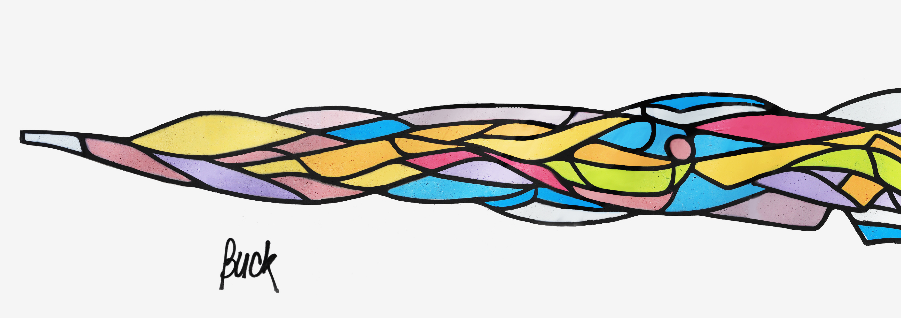

Espace-rencontre pour le maintien des liens parents-enfants
19 rue de la Convention 42100SAINT-ETIENNE Qu'est-ce qu'un Espace de Rencontre Parents-Enfants? 
Notre raison d'être
Point Vert est un lieu d'accueil neutre, permettant le déroulement de rencontres entre parents et enfants ou grands-parents lorsque le droit de visite se heurte à des difficultés particulières.
L'objectif de Point Vert, à terme, est de permettre aux parents de gérer les droits de visite eux-mêmes, dans le respect des droits et des devoirs de chacun. Il y a nécessité pour l'enfant d'être et de rester inscrit dans son histoire familiale.
Etre amputé d'une partie de soi n'aide pas à se structurer harmonieusement.
Qui sommes-nous
Créée en octobre 1990, l'association est placée sous le régime de la loi de 1901 et a fait l'objet d'un arrêté préfectoral d'agrément du 26 juillet 2013.
Elle s'inscrit totalement dans la définition et le dispositif édictés par la loi du 5 mars 2007 sur la protection de l'enfance et celui de la loi du 9 juillet 2010 relative aux violences faites aux femmes. Point Vert est adhérente à la Fédération Française des Espaces de Rencontre (FFER).
Lorsque le droit de visite se heurte à des difficultés particulières, son exercice à Point Vert est ordonné par les Juges aux Affaires Familiales ou, pour une part plus réduite, par les Juges des Enfants. Quelques situations, très peu nombreuses, sont également soumises à Point Vert à l'initiative conjointe des deux parents.
L'activité de Point Vert s'exerce dans des locaux loués au Conseil Départemental de la Loire 19 rue de La Convention 42100 Saint-Etienne. Ils sont bien adaptés à la mission car ils ont été conçus pour une large part dans l'optique d'accueillir l'espace de rencontre.
Notre mission
- La valorisation des rôles et des compétences de chaque parent.
- L'aide et l'accompagnement des familles en conflit, en voie de séparation ou séparés
- La facilitation de l'exercice équitable et responsable de la co-parentalité.
- L'aide à l'implication des parents dans l'exercice de leurs droits et de leurs devoirs parentaux.
En effet les parents doivent se réapproprier l'organisation du droit de visite et d'hébergement. C'est pourquoi l'action de Point Vert se veut transitoire. Le souci constant de Point Vert est de réduire le délai s'écoulant entre la date de la décision de justice et celle de sa mise en œuvre.
L'exercice du droit de visite se fait soit dans les locaux de Point Vert, soit par le biais d'un « droit de
passage », Point Vert n'étant plus alors « qu'un sas » entre les parents et les enfants.
Il est important de souligner que dans l'exercice de sa mission Point Vert met en œuvre le code de déontologie du 04 novembre 1998, modifié le 02 décembre 2002. Il est joint en annexe.
Organisation
Nous offrons 18 plages d'accueil : 4 samedis matin et après-midi, 4 vendredis matin pour les bébés, 4 vendredis soir, 4 mardis soir, 2 mercredis matin, 4 mercredis après-midi et 2 dimanches soir pour les retours de passages. Point Vert propose aux familles un accompagnement individualisé dans un cadre collectif (sans la présence constante d’un tiers).
La surface disponible permet un accueil de qualité avec des locaux dédiés à l'accueil, en intérieur et en extérieur ainsi qu'un bureau pour l'équipe.
Équipe
Au total ce sont 11 salariés qui sont employés par Point Vert dont :
- 8 travailleurs sociaux de formation et une psychologue, qui forment l'équipe d'intervenants
- une directrice, assistante sociale de formation, qui accompagne et anime l'équipe.
- une secretaire
- 3 intervenants bénévoles viennent en appui dans la mission d'accompagnement des rencontres.
- Un psychologue vacataire anime l'analyse de la pratique professionnelle.
Le Président, Monsieur Yves Garnier, est assisté d'une Vice-Présidente : Madame Dominique Robinat, d'une Secrétaire, Madame Josiane Flachon et d'une Trésorière, Madame Andrée Sarron. Le Conseil d'Administration est composé de 13 membres. Ceux-ci sont d'origines diverses : Travailleurs Sociaux, Médecins, Avocats et Cadres Supérieurs.
Partenaires
La quasi totalité des moyens financiers dont dispose Point Vert est constituée par des subventions publiques.
Les collectivités et administrations contributives sont les suivantes :
Dons
L'Association est classée Organisme d'Intérêt Général.
Tout don donne lieu à l'établissement d'un reçu fiscal permettant de bénéficier d'une réduction d'impôt de 66% pour les particuliers et de 60% pour les sociétés dans la limite de 20% du revenu imposable.
Exemple :
Pour un particulier, un don de 100 € ne lui coûte réellement que 34 €.
Vous pouvez adresser vos dons par chèque à l'adresse suivante :
Association Point Vert
19 rue de la Convention
42100 Saint-Etienne
Liens utiles
- Qu'est-ce qu'un Espace de Rencontre Parents-Enfants?
- Informations sur le Tribunal Judiciaire de Saint-Etienne.
- Informations sur l'Ordre des Avocats de Saint-Etienne.
- Code de déontologie de la Fédération Française des Espaces de Rencontre (FFER).
- Loi n°2007-293 réformant la protection de l'enfance.
- Loi n°2010-769 relative aux violences faites spécifiquement aux femmes.
Nos Brochures
Nous contacter
Pour toute question, vous pouvez nous joindre par mail en cliquant sur l'adresse suivante :
contact@point-vert.info ou par téléphone au 04-77-25-38-62. Vous pouvez également nous envoyer un courrier.
Adresse postale :
Association Point Vert
19 rue de la Convention
42100 Saint-Etienne
R.G.P.D.
Le site point-vert.info est un site d'information propriété de l'association Point Vert.
Ce site est hébergé par la société Amen du groupe Dada 12-14 Rond Point des Champs Elysées 75008 Paris, France.
Nous ne récoltons aucune donnée vous concernant, excepté votre adresse mail laissée par vous dans la rubrique contact afin de pouvoir vous répondre.